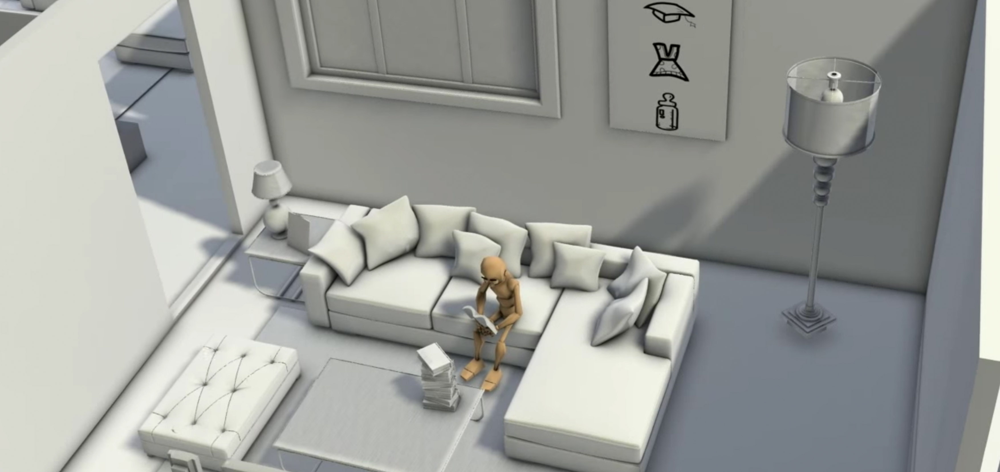
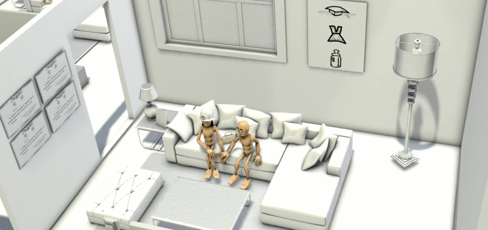
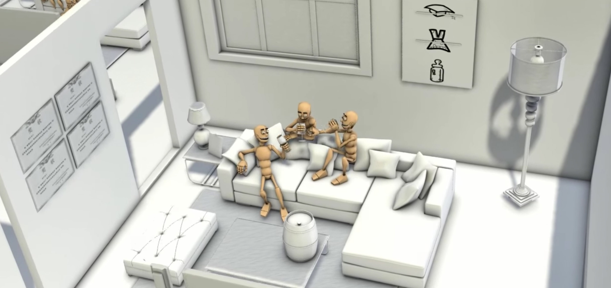

Looking Forward is my undergrad capstone project at Beijing Normal University. This is an absolutely individual project including script writing, 3D modeling, animating, lighting, and rendering.
Inspired by a set of current Chinese marriage patterns, I created this 3D animation to encourage people to be faithful in their life by telling a story of a loser who never quit and finally turns out a good ending.
I created the following 3D animation in three month, under the supervision of my brilliant advisor, Haibo Wang.
In recent year, getting marriage is coming to be a social issue and increasingly harder due to the huge living pressure. There is a certain amount of ladies who insist to marry gentlemen with better financial status. Because of this, some gentlemen, sometimes people would call them loser, have to break up with their girlfriends and therefore lose faith in love and even life. In this case, I would encourage them to be more positive in their life by telling a story of a “loser” who never quit, strives to get through all the break-ups and downsides in his life and finally finds his value in life. My purpose is to encourage losers, educate them and prove to them that being a loser is to learn how to win.

This chapter is about education. Mr. Loser spends all the time reading and learning. He receives a number of awards in good performance at school. Finally he receives an offer from his dream school.

This chapter is about dating and marriage. Mr. Loser realizes that dating is not as easy as studying after being rejected several times. He reads dating books and finally find a girl who wants to marry him.

This chapter has two parts. Mr. Loser firstly fails to persuade his wife to have a baby since he is not rich enough. Then it is his friends who come to stay with him and get him through the depression.
I created this project in 3D Max including 3D modeling, skeleton binding, animating and lighting. In addition, I used Autodesk combustion to merge the lighting layer and object layer together to finish the final version. The main technical difficulty for me is how to bind 3D objects with motion skeleton. This is the most tricky part because I have to decide which part of object to be tied to which part of skeleton in order to make the character move smoothly.